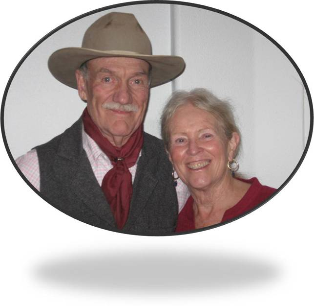

A Place For The Sweaters
“The time has come for science to busy itself with the earth itself. The first step is to reconstruct a sample of what we had to start with. That in a nutshell is the Arboretum.” TheArboretum and the University, The River of the Mother of God
“Like winds and sunsets, wild things were taken for granted until progress began to do away with them. Now we face the question whether a still higher ‘standard of living’ is worth its cost in things natural, wild and free.”Foreword, A Sand County Almanac.
“One of the penalties of an ecological education is that one lives alone in a world of wounds. Much of the damage inflicted on land is quite invisible to laymen. An ecologist must either harden his shell and make believe that the consequences of science are none of his business, or he must be the doctor who sees the marks of death in a community that believes itself well and does not want to be told otherwise.” Aldo Leopold, A Sand County Almanac
“Conservation is getting nowhere because it is incompatible with our Abrahamic concept of land. We abuse land because we regard it as a commodity belonging to us. When we see land as a community to which we belong, we may begin to use it with love and respect.” Aldo Leopold
"Aldo Leopold was an American author, philosopher, naturalist, scientist, ecologist, forester, conservationist, and environmentalist. He was a professor at the University of Wisconsin and is best known for his book A Sand County Almanac, which has sold more than two million copies."
July 4, 2020
I woke but did not want to, from a dream where no one was at war with anyone, no one fleeing flood or famine.It was a place with low human density, door gardens, grain fields, pastures and forest on nearby hills, and in the streams - plenty of fish. And Everyone was at home.
July 4, 2020
As dreams go, it felt a bit like a small Nebraska town,
or might have been Syria or Honduras – some universal village anyway, with abundant contentment in the absence of too much progress. Kids played in the square till late, grandparents already sleeping. At night, you could hear neighbors, cough, argue, making love, and there was fresh bread in the morning – a short walk away
It never quite works though, dozing back, to recover, or edit such dreams. I wanted to shape this one, to conjure up the return to such places for all who have had to flee them, millions uprooting, bundling, leaving the elders - leaving all behind.
those who paid scoundrels with family treasure, to take them
in leaky boats, airless trucks, frigid train tops, force marched to hostile borders and foreign tongues, then to endure weeks or months under
George and Nancy Wallace, Larimer County, Colorado USAbridges or blue tarps, be trapped in canvas cities, - waking from their own dreams of home.
Aldo Leopold (January 11, 1887 – April 21, 1948) was an American author, philosopher, naturalist, scientist, ecologist, forester, conservationist, and environmentalist.

1234 some roadGrand Isle, VT 05485

(802)000-0000

BCA@gmail.com

@untitled

instagram.com

Dribbble.com

facebook.com